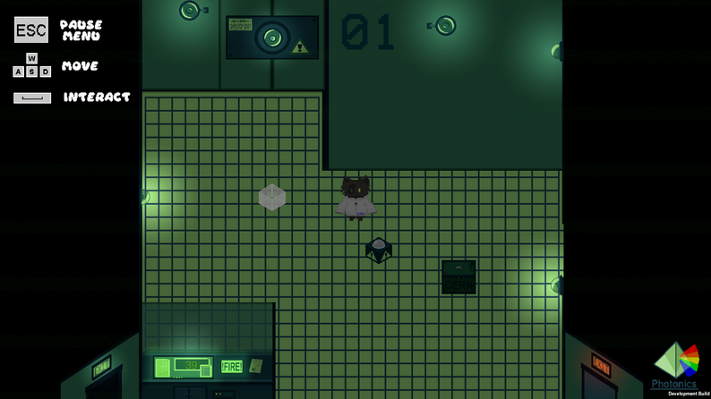
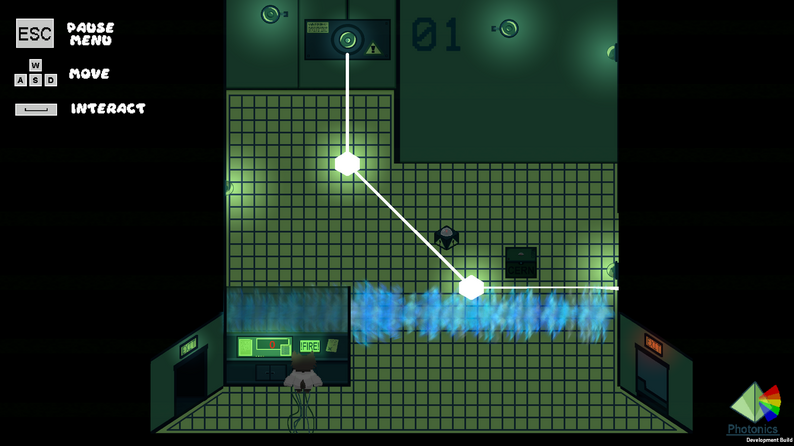
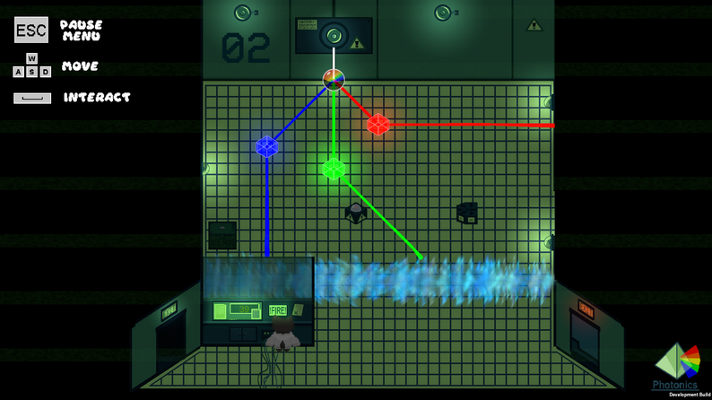

Photonics was made as a group class project. Students had to plan, develop and test a game of their own creation over the ten-week quarter whilst emulating traditional game design software cycles. Our group made Photonics, a laser redirection puzzle game. I was responsible for programming the laser code, allowing for splitting and merging of the beams based on what the player has placed down. The player can only place prisms that rotate the laser beam a fixed angle, and must redirect the beam to hit the end target. However, if the beam has been split into its component colors, the player must merge each separate beam back into white before it hits the target.
Photonics
2D Laser Redirection Game
Visit The Itch.io Page To Play Online


